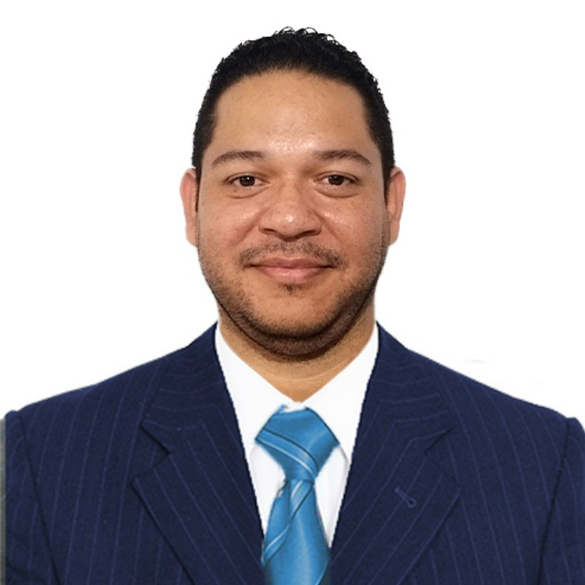

Finanzas que orientan
Costos, márgenes, presupuestos, flujo de caja y tableros para saber qué genera valor y dónde se pierde.
Conoce la asesoría financiera ↗Ayudo a las empresas a entender su negocio, organizar su operación y convertir datos y herramientas digitales en mejores decisiones.

Más de 15 años de experiencia entre control financiero, dirección, analítica y desarrollo de software en Colombia, Panamá y Costa Rica.
Trabajo donde los números, los procesos y la tecnología se encuentran. Cada solución comienza por entender la operación real.
Costos, márgenes, presupuestos, flujo de caja y tableros para saber qué genera valor y dónde se pierde.
Conoce la asesoría financiera ↗Diseño flujos, reportes e integraciones que reducen trabajo manual y conectan información dispersa.
Explora automatización y software ↗Diagnóstico de oportunidades y pilotos de agentes para atención, consulta y tareas repetitivas, con supervisión humana.
Descubre la IA aplicada ↗Una ruta por etapas: diagnóstico, prioridades, implementación y seguimiento según las necesidades de cada empresa.
Mi método evita soluciones vistosas que no responden a un problema medible.
Reviso información financiera, operación, herramientas y objetivos. Separo hechos de supuestos.
Propongo entregables, costos y criterios de éxito. La empresa elige qué implementar y cuándo.
Construyo o coordino las soluciones acordadas y verifico su utilidad con datos y uso real.
Soy contador público y desarrollador Full Stack. Mi carrera pasó por gerencia y control financiero, y evolucionó hacia la analítica, la automatización y la dirección de innovación tecnológica.
Hoy dirijo Analítica e Innovación Tecnológica en GHS / Faranda. Antes fui Controller Financiero en Faranda y gerente financiero en Hard Rock Hotel Panamá. Desde TekneApps desarrollo soluciones de software de forma independiente.
Cuéntame qué necesitas entender, ordenar o construir. Empezaremos por un diagnóstico con alcance concreto y prioridades claras.